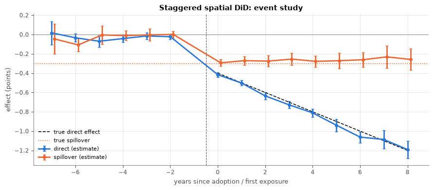

Panel Designs: DiD with Spillovers, Staggered Adoption, Synthetic Control
This notebook estimates direct and spillover effects from semi-synthetic annual county panels, 2014 to 2025, built on the 2024 adult diabetes baseline. The three designs are simultaneous adoption, staggered adoption, and a single treated county.
The estimators are difference-in-differences with spillover rings, staggered difference-in-differences, and spatial synthetic control. The classes are SpatialDiD and StaggeredSpatialDiD in geolattice.spatial_analysis.spatialcausal.
With repeated observations over time, each county serves as its own control: fixed differences between counties cancel, and only changes are compared. Space complicates this in two ways: untreated neighbours may be affected (contaminated controls), and adoption often spreads across states over time.
Three semi-synthetic annual panels, 2014-2025, built on real county baselines (2024 diabetes prevalence) with simulated common trends, factor structure and noise:
Panel
Design
True effects
C1
10 random states adopt in 2019
direct −0.5; spillover −0.4 / −0.2 / −0.1 at 0-40 / 40-80 / 80-120 km
C2
states adopt in 2017, 2019, 2021 (6 each)
direct \(-0.4-0.1k\) after \(k\) years; −0.3 for never-treated counties within 60 km of treated ones
C3
one county (Hinds, MS) adopts in 2021
−1.0; spillover \(-0.8(1-d/120)\) within 120 km
Installation. This notebook needs installation option 3 (core, spatial analysis and spatial statistics): pip install "geolattice[statistics]". See “Installation options” in the GeoLattice README.
Code
import warningswarnings.filterwarnings("ignore")import numpy as np, pandas as pd, matplotlib.pyplot as pltimport geolattice.spatial_analysis.spatialcausal as sc, countycausal as cc, tutorial_style as tsfrom geolattice.spatial_analysis.spatialcausal import vizts.use()
Difference-in-differences and contaminated controls
With treated group \(G_i\in\{0,1\}\) and post period \(P_t\), the two-way fixed-effects (TWFE) model
identifies the ATT under parallel trends: \(\mathbb E[Y_{it}(0)-Y_{is}(0)\mid G=1]=\mathbb E[Y_{it}(0)-Y_{is}(0)\mid G=0]\).
Spillovers break the control group. If some untreated counties are affected, \(Y_{it}=Y_{it}(0)+S_{it}\) for them, with spillover \(S\). The DiD estimand becomes
Counties beyond \(d_R\) form a clean control group, \(\tau\) is the direct effect, and \(\delta_r\) the spillover in ring \(r\). The outer ring must extend beyond the true spillover range. Estimation uses the two-way within transformation (alternating projections, which also handle unbalanced panels) and standard errors clustered on spatial blocks of counties, which allows for correlation between neighbours.
Event study. Replacing \(P_t\) by period dummies (reference = last pre-period) gives group × period coefficients. Pre-period coefficients test parallel trends jointly; with \(G\) clusters and \(q\) restrictions the Hotelling-type statistic \(F=W\,(G-q)/\big((G-1)q\big)\sim F(q,G-q)\) avoids the over-rejection of a \(\chi^2\) test with few clusters.
The naive DiD (att_naive) is attenuated because about 710 contaminated counties (rings 1-3) sit in its control group. The ring model recovers the direct effect and the decaying spillover, and the event study shows flat pre-trends for every group.
Staggered adoption: group-time effects with clean controls
When states adopt at different times, static TWFE also compares late adopters with already-treated early adopters. With effects that grow over time those “forbidden comparisons” receive negative weights, and the estimate can even change sign (Goodman-Bacon, 2021). Callaway & Sant’Anna (2021) instead estimate each group-time ATT separately. For cohort \(g\) (adoption year) and year \(t\),
\[\text{ATT}(g,t)=\mathbb E\big[Y_t-Y_{g-1}\mid G=g\big]-\mathbb E\big[Y_t-Y_{g-1}\mid \text{clean controls at }t\big],\]
using the year before adoption as the base. StaggeredSpatialDiD adds space:
every county has an exposure time\(E_i\), the first year some county within the exposure distance (60 km) has adopted;
clean controls at year \(t\) are counties neither treated nor exposed by \(\max(t,g-1)\), so exposed neighbours never act as controls;
never-treated counties first exposed in year \(e\) form spillover cohorts with their own \(\text{ATT}_s(e,t)\).
Cells are aggregated into an overall ATT and an event study \(\theta(k)=\sum_g w_g\,\text{ATT}(g,g+k)\) with cohort-size weights. Inference uses a cluster bootstrap over spatial blocks.
SpatialPanel(units=3109, periods=12, obs=37308, treated_units=1061, balanced=True)
cohort 2017: DC, IA, LA, NH, OK, UT
cohort 2019: DE, IN, ME, MO, NC, ND
cohort 2021: AL, CO, GA, MD, NJ, PA
pre-trend Wald p-value: 0.091
estimate
se
ci_lower
ci_upper
truth
effect
att
-0.729
0.020
-0.767
-0.691
-0.707
spillover
-0.270
0.026
-0.321
-0.219
-0.300
att_naive_twfe
-0.612
0.010
-0.632
-0.592
-0.707
Code
es = stag.event_study_fig, ax = plt.subplots(figsize=(9, 4))for kind, col, off in (("direct", ts.BLUE, 0.0), ("spillover", ts.ORANGE, 0.12)): d = es[es.kind == kind] ax.errorbar(d.rel_time + off, d.att, yerr=1.96* d.se, fmt="o-", ms=4, capsize=2, color=col, label=f"{kind} (estimate)")kk = np.arange(0, es.rel_time.max() +1)ax.plot(kk, p2.truth["event_time"](kk), "--", color=ts.TRUTH, lw=1.2, label="true direct effect")ax.axhline(-0.3, color=ts.ORANGE, ls=":", lw=1.2, label="true spillover")ax.axhline(0, color=ts.MUTED, lw=0.8); ax.axvline(-0.5, color=ts.INK2, lw=0.8, ls="--")ax.set_xlabel("years since adoption / first exposure"); ax.set_ylabel("effect (points)")ax.set_title("Staggered spatial DiD: event study"); ax.legend(fontsize=8)plt.tight_layout()

The group-time estimator tracks the growing direct effect and the constant spillover; pre-period estimates are flat. Static TWFE (att_naive_twfe) is biased: it mixes forbidden comparisons with contaminated controls.
Spatial synthetic control
When a single unit is treated, DiD has one treated observation per year. Synthetic control (Abadie, Diamond & Hainmueller, 2010) builds a counterfactual as a weighted average of untreated donors that tracks the treated unit before treatment:
The weights are solved as non-negative least squares with a heavily weighted sum-to-one row, which is exact to ~\(1/M\) and fast enough for hundreds of donors and placebos.
The spatial problem. Neighbours share regional trends, so they are the best-fitting donors, and also the ones a local policy spills onto. A contaminated donor carries part of the effect into the counterfactual and pulls the estimate toward zero. The spatial version drops donors within a buffer distance of the treated unit, estimates the spillover onto each excluded neighbour (each gets its own synthetic control from the far donors), and reports how the estimate changes with the buffer.
Inference: in-space placebos. Re-run the method pretending each donor was treated and compare post/pre fit ratios, \(\rho_j=\text{RMSPE}_{\text{post},j}/\text{RMSPE}_{\text{pre},j}\). The permutation p-value is the rank of the treated unit’s ratio among all placebos.
Code
p3, g3 = cc.scenario_synthetic_control(seed=32)near = p3.truth["spillover_by_unit"] !=0units =list(p3.units)print(p3, f"\n{near.sum()} counties within 120 km of the treated county receive spillover")rows, fits = {}, {}for b in (0, 120): m = sc.SpatialSyntheticControl(buffer=b).fit(p3) fits[b] = m wn = m.weights_[[u for u in m.weights_.index if near[units.index(u)]]].sum() rows[f"buffer {b} km"] = {"ATT": m.att_, "permutation p": m.p_value_, "pre-period RMSPE": m.pre_rmspe_,"weight on contaminated donors": wn, "donors": len(m.donors_)}print("true ATT: -1.0")pd.DataFrame(rows).T.round(3)
SpatialPanel(units=213, periods=12, obs=2556, treated_units=1, balanced=True)
25 counties within 120 km of the treated county receive spillover
true ATT: -1.0
Without a buffer the best-fitting donors are contaminated neighbours: about half the weight goes to counties that received spillover, and the estimate is pulled toward zero. A 120 km buffer removes them and recovers the effect. The cost shows in the buffer curve: far donors fit the pre-period less well.
Look at the permutation p-values: the biased no-buffer estimate looks significant (p ≈ 0.05), while the accurate buffered estimate does not (p ≈ 0.37). The ratio statistic divides by pre-period fit. With only 7 pre-treatment years and ~200 donors, a near-perfect pre-fit (RMSPE ≈ 0 without a buffer) makes the treated unit’s ratio enormous. So the p-value reflects fit quality as much as effect size, and here it rewards precisely the contaminated donors that bias the estimate. Synthetic control inference needs long pre-periods; with short ones, judge the estimate by its robustness to the buffer rather than by the p-value.
Summary and Conclusions
Untreated neighbours make bad controls. Ring models turn their contamination into estimated spillovers and leave a clean control group.
With staggered adoption, estimate group-time effects with clean (unexposed, not-yet-treated) controls; static TWFE is biased.
Synthetic control favours neighbours, which are exactly the donors a local policy contaminates. Use a buffer, estimate spillovers on the excluded units, and show buffer sensitivity.
Resources
Papers
Reference
Notes
Butts (2023)
Spillovers contaminate the DiD control group
Goodman-Bacon (2021)
TWFE puts negative weight on already-treated comparisons
Callaway & Sant’Anna (2021)
Group-time ATTs with not-yet-treated controls
Abadie, Diamond & Hainmueller (2010)
Synthetic control
In this library
Object
Role
SpatialDiD
Two-way fixed effects with distance rings and an event study
StaggeredSpatialDiD
Group-time effects that drop exposed neighbours from the controls
Spatial synthetic control
Donor weights with a distance buffer and in-space placebos